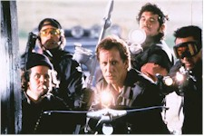
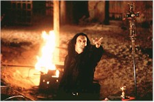

Contents | Features | Reviews | Books | Archives | Store |
 |
|
| Movie Credits | Buy It! |
John Carpenter's Vampires
Review by Sean Axmaker
Posted 13 November 1998
| Directed by John Carpenter Starring
James Woods, Written by John Steakley and Don Jakoby |
For a moment it looked like Carpenter was on a comeback. After a series of critical and financial flops he returned to his lean, mean roots of action and horror in a Howard Hawks vein, a horror western about vampire exterminators in the southwest. Despite mixed reviews Carpenter’s violent exercise in undead mayhem (sort of a "Dirty Dozen" take on the vampire High command) became the number one film on Halloween weekend and his biggest opening in years, but then slipped off the top ten in two weeks. It’s not too surprising. Aesthetic judgments aside, Carpenter is happily out of step with contemporary Hollywood. His iconoclastic vision is simply too idiosyncratic for the popcorn munching genre audiences and too gleefully macho for the art film crowd.
The film kicks off with an bloody attack by team Crow, the Vatican sponsored group led by the foul-mouthed black hat hero Jack Crow (James Woods), on a vampire nest. In Carpenter’s world, vampire hunting isn’t something for dandified Victorian gentlemen in foggy graveyards but more of a SWAT operation, the team armed with automatic weapons (that’s just to get their attention), metal stakes, and harpoon guns. He’s also streamlined the vampire lore – the only thing that’ll kill these bloodsuckers is a stake through the heart and sunlight. So the team falls into a rhythm: harpoon a bloodsucker, kick in the winch and drag him into the sunlight, where he/she explodes in a white-hot flame. But the raid is only a partial success because the Master vampire is nowhere to be seen.
As Crow’s Vatican sponsored team celebrates victory with hookers and booze that night, retribution visits in the form of Valek (6’5" Thomas Ian Griffith looking like the lead singer of a goth band in his long leather coat), the powerful vampire master who slices and dices partygoers with his Ginsu fingernails, but not before he bites prostitute Katrina (Sheryl Lee) in one of the most outrageously sexually suggestive scenes to get by in an R film. Crow and his sole surviving team member Montoya (Daniel Baldwin) grab Katrina, whose fresh blood ties have established a psychic link to Valek, and get the hell out of Dodge to regroup. Team Crow inherits a rookie priest, Father Adam (a fresh faced Tim Guinee), a green, uninitiated kid who worships Crow and ultimately who provides clues to Valek’s master plan (after a little persuasion by the contemptuous Crow). Montoya holes up with Katrina, his feelings starting to melt as he watches Katrina slowly turn to the darkside (not a particularly believable romance but handled in the tough, taciturn style that makes for good pulp fiction). Finally the new team plans its attack.
Carpenter turns John Steakley’s novel "Vampire$" into a perverse remake of Howard Hawks’ "Rio Bravo" by way of Sergio Leone and "The Wild Bunch." James Woods is a foul mouthed, hard drinking, whore-mongering John Wayne leading a grimy pack of vampire hunting professionals. It’s machismo run amuck and Carpenter loves it, but his unrepentant misogynist macho warriors are sure to offend audiences not already turned off by the gory bloodshed. Once Katrina is turned she becomes something less than an animal in Crow’s eyes; she’s tied up, pushed, prodded, and at one point wakes up tied naked and spread-eagled on a bed – Mr. Sensitivity Jack Crow ain’t. There’s a perverse comic book irony in such extreme characters as emissaries of the Vatican, with Woods playing Jack Crow with the glee of a choir boy gone bad – he’s been raised by Catholic church but he’s not above beating the shit out of a priest to get information. It’s the kind of conundrum that exists only in the movies and Carpenter plays it for all it’s worth.
As he sweeps away the familiar vampire lore (garlic, crucifixes, running water, etc…), Carpenter ties the vampires even more directly to the Christian church and it’s iconography. It’s a nice symmetry: just as Lucifer is a fallen angel, so the first vampire Valek is a fallen priest, transformed by the church itself in a forbidden ritual gone wrong to holy hell. The southwest architecture, with gothic arches and old world ambiance, echoes the site of the crime centuries ago. By the time Crow is tied to the cross for crucifixion you’ll either be cheering or jeering Carpenter for his audacity.
It’s not Carpenter’s best film, and audiences have already proven it’s far from his most popular, but in this period when political correctness is battled only by juvenilia and bad taste comedies, there’s something perversely satisfying in the rampant sexism, violence, and machismo run amuck. I share one significant touchstone with Carpenter: a love of all things Howard Hawks, which perhaps makes me more susceptible to his moral world. From the Father Adam’s baptism of blood and fire (he finds he has a flair for the exhilarating work) which earns his place in the group, to the hokey tough-guy farewell at the conclusion of the film as two warriors express their love for another in body language and terse oaths before turning their backs on one another, destined to become nemeses, I love these decades-old conventions brought into the present.
The film slows for an exposition heavy second act, where each of the characters (including guest Cardinal Maximillian Schell, as the religious authority overseeing the vampire hunting teams) opens up with personal histories and historical background, but it’s a forgivable misstep. The problems with audiences seem more tied to Woods’ verbal diarrhea ("So tell me," he asks Father Adam, "when I was beating the shit out you, did you get a little wood?"), the team’s unrepentant misogyny, and the machismo so thick
the musk wafts off the screen. Too bad. From the blood red skies and dusky, dusty landscapes (courtesy longtime cinematographer Gary Kibbe) to the Carpetner’s Ry Cooder-esque score (which switches from slide guitar to bluesy synthesizer soon after the main titles) to the ferocious vampires which suggest both wild animals and European gothic stateliness, Carpenter has married the western and the vampire film in an earthy epic style. Carpenter’s sleek, stark images and stripped down, no-holds-barred action is pure pulp glory and an antidote to the formula genre pictures and special effects driven vehicles that pass as action films nowadays. It’s the most fun I’ve had at the movies for some time.
Contents | Features | Reviews | Books | Archives | Store
Copyright © 1999 by Nitrate Productions, Inc. All Rights Reserved.